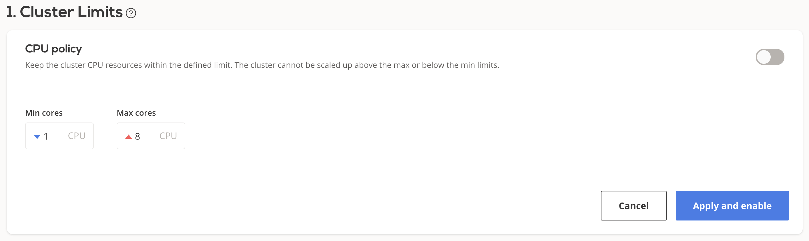

Autoscaling policies¶
Autoscaling policies define a set of rules based on which your cluster is monitored and scaled to maintain steady performance at the lowest possible cost.
This topic describes the available policy configuration options and provides guidance on how to configure them.
Prerequisites¶
- CAST AI cluster - see create cluster.
Select a cluster and navigate to the Policies menu.

Cluster CPU limits policy¶
Each CAST AI cluster size can be limited by the total amount of vCPUs available on all the worker nodes used to run workloads. If disabled, the cluster can upscale indefinitely and downscale to 0 worker nodes, depending on the actual resource consumption.
Configuring CPU limits policy¶
You can adjust a cluster's CPU limits settings either via the CAST AI console:

or via the CAST AI policies API endpoint by setting values for
"clusterLimits": {
"cpu": {
"maxCores": <value>,
"minCores": <value>
},
"enabled": <value>
}
The new settings will propagate immediately.
Horizontal Pod Autoscaler (HPA) policy¶
See HPA documentation for a detailed overview.
Node deletion policy¶
This policy will automatically remove nodes from your cluster when they no longer have scheduled workloads. This allows your cluster to maintain a minimal footprint and reduce cloud costs.
Unscheduled pods policy¶
A pod becomes unschedulable when the Kubernetes scheduler cannot find a node to assign the pod to. For instance, a pod can request more CPU or memory than the resources available on any of the worker nodes.
In many such cases, this indicates the need to scale up by adding additional nodes to the cluster.
The CAST AI autoscaler is equipped with a mechanism to handle this.
Headroom attributes¶
Headroom is a buffer of spare capacity (in terms of both memory and CPU) to ensure that cluster can meet suddenly increased demand for resources. It is based on the currently available total worker nodes resource capacity. For example, if headroom for memory and CPU are both set to 10%, and the cluster consists of 2 worker nodes equipped with 2 cores and 4GB RAM each, a total of 0.4 cores and 819MB would be considered as headroom in the next cluster size increase phase.
Provisioning decision¶
- After receiving the unschedulable pods event, the CAST AI recommendation engine will select the best price/performance ratio node capable of accommodating all of the currently unschedulable pods plus headroom.
- CAST AI will then provision it and join with the cluster. This process usually takes a few minutes, depending on the cloud service provider of your choice.
- Currently, only a single node will be added at a time. If any unschedulable pods still remain, the cycle is repeated until all the pods are scheduled (provided that the reason was insufficient resources).
Configuring the unscheduled pod's policy¶
You can enable/disable the unschedulable pod's policy and set headroom settings either on the CAST AI console:
or via the CAST AI policies API endpoint by setting values for
"unschedulablePods": {
"enabled": <value>,
"headroom": {
"cpuPercentage": <value>,
"memoryPercentage": <value>
}
}
It may take a few minutes for the new settings to propagate.
Policies precedence rules¶
If multiple policies are enabled and multiple rules are triggered during the same evaluation period, they will be handled in the following order: